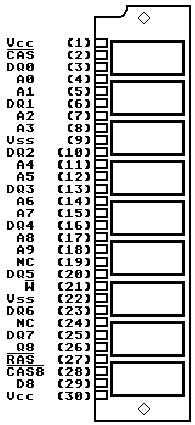

Previous
Next
TOC
Die Pinbelegung der SIMM Module
Diese Computer verfügen über SIMM-Module als Speicher, die hierauf
befindlichen Chips entsprechen entweder von der Organisation her dem
256Kbit * 1 (bei 256KByte Modulen) oder dem 1MBit * 1 (bei 1MByte
Modulen)
Die Erklärungen der einzelnen Signale:
30 pin Fast Page Mode SIMM
256kx8 256kx9 1Mx8 1Mx9 4Mx8 4Mx9
A0-A9.................Address Input
PQ
für Datenausgang Parity
DQ0-DQ7...........Data Input/Output
PD
für Dateneingang Parity
D8.......................Data Input
PCAS für Parity CAS
Q8......................Data Output
/CAS..........Column Address Strobe
Diese drei werden nicht ver-
/RAS.............Row Address Strobe
wendet, da Atari kein Pari-
/W.................Read/Write Input
tätsbit vorgesehen hat beim
Vcc......................Power(+5V)
Hauptspeicher!
Vss..........................Ground
NC....................No Connection
Notes: QP, CASP and DP are N/C on all x8 bit modules, A9 is a N/C on
256k modules, A10 is a N/C on 256k and 1M modules

30 pin SIMM
-------------------------------
|
|
)
|
--|||||||||||||||||||||||||---
1
30
Kapitel Die Pinbelegung der SIMM Module, Seite 1